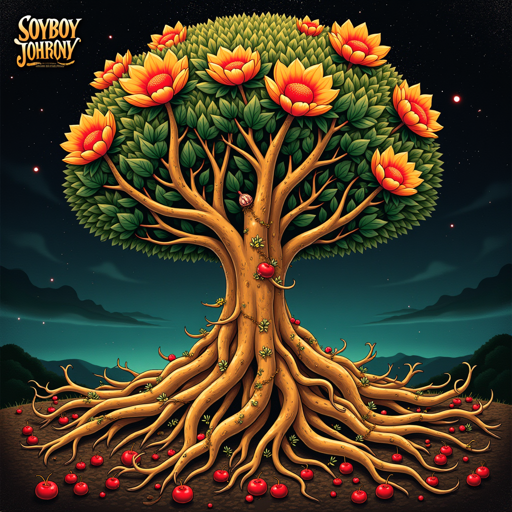

A year-in-review snapshot of publications, citations, and a fictional musical persona inspired by this author’s work.
To celebrate this author’s work, we created a fictional musical persona inspired by their publishing history.
In a world where taste buds reign supreme, Soyboy Symphony orchestrates the sweet symphony of edamame excellence. With a background in culinary curiosity, Nick's melodic journey began harmonizing the chemistry of growth, tracing the harmony of flavors across lands, and refining the rhythm of sugar content. As his expertise branched out like tendrils of a verdant vine, he wove together the threads of nutrition, consumer cravings, and agricultural innovation. Now, with a palette of knowledge at his fingertips, Soyboy Symphony weaves a rich tapestry of sound that celebrates the edamame's multifaceted charm.

Thank you for being part of our discovery center and for contributing to another year of innovation and collaboration.